|
|
|
NSG Kisbalaton bzw.
Kleinbalaton |
|
|
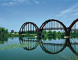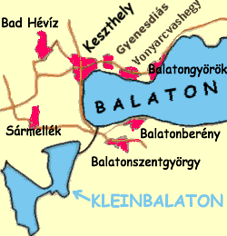Die
Gegend ist reich an
Heilbädern und seit 1951 ein einzigartiges Naturschutzgebiet.
In Museen und Informationshäusern gewinnt man den ersten
Eindruck über das Leben der Anwohner
früherer Epochen und vor Ort lernt man Land und Leute dieser
Gegend in ihrem Element kennen.
Freizeitbeschäftigung
für naturkundliche Reisende:
Der
grösste
Teil des Kleinbalatons ist zu Zwecken des Naturschutzes gesperrt. Allen
Besuchern offen stehen die Ausflugszentren auf der Insel
Kányavár und in den Ortschaften Vörs und
Kápolnáspuszta.
-
Angelmöglichkeiten gibt es im Mündungsbereich des
Zala Flusses (von
der Eisenbahnbrücke bis zum Balaton), auf der Insel
Kányavár, am östlichen Ufer
der vereinigten Kanäle (in Fenékpuszta), an beiden
Seiten des Verbindungsweges
zwischen Zalavár und Zalaszabar und am
Báránder Wasser (Zalaseite). In allen
anderen Gebieten des Kleinbalatons ist das Angeln verboten!
-
Wandern
in den Naturschutzgebieten – nur unter fachkundlicher
Führung.
-
Besichtigung
des Vogelreservats.
Unter den über 250
beobachteten
Vogelarten gibt es zahlreiche vom Aussterben bedrohte Arten, deren
Existenz
hier gesichert wird. Das Vogelreservat ist ferner eine Oase
für seltene
Pflanzen, die nur hier vorkommen. Die auffälligsten
Sehenswürdigkeiten sind hier die Reiher, Löffler,
Kormorane und Fluss-Seeschwalben.
Details für Vogelbeobachtung:
-
In der
Nähe von Fenékpuszta an der Landstraße 76
befindet
sich ein Informationsgebäude. Für Gruppen und
einzelne Gäste werden fachkundige Führungen im
Naturschutzgebiet angeboten.
-
Auf
der
Kányavári-Insel
(2 km
nördlich von Balatonmagyaród) und der
Pap-Insel
gibt
es Türme zur
Vogelbeobachtung.
-
Büffelreservat
in
Kápolnáspuszta - das
in Mitteleuropa einzige Büffelreservat in
Kápolnáspuszta liegt zwischen den Ortschaften
Zalakomár und Balatonmogyoród, ca. 4 km
östlich vom .
|
|
|
|
Naturschutz
am Kleinbalaton
|
|
|
|
VORWORT
Das seit eh und je von
seiner Vogelwelt berühmte Sumpfgebiet im
Südwestzipfel des Balatons wurde seit 1818 in mehreren Stufen
trockengelegt, besonders stark in den 1920er Jahren. Die nachteiligen
Folgen der Zivilisation auf Flora und Fauna, vor allem aber auf den
Menschen selbst waren gravierend. In den 1960er Jahren begann eine
gründliche Vorbereitung zur Renaturalisierung
des Sumpfgebietes, die seit den 1980er Jahren in steigendem
Maße realisiert wird. Im Jahre 1986 um 15.000
ha erweitert, schuf man im Naturschutzgebiet neue Lebensräume
für zahlreiche, in ihrem Existenz
bedrohte Arten.
Zwei
größere Sumpffiltergebiete sichern heute
die Existenz einer einzigartigen Flora und Fauna dieses sumpfigen
Feuchtbiotops.
Trotz aller Bemühungen
um den Naturschutz gelingt es Grundstückspekulanten
immer wieder auf örtlicher Ebene, den
Wasserspiegel des großen Balatons zu senken. Zuletzt Ende
2002, als man die Siele bei Siófok um rd. 100 cm tiefer
setzte, weil sich viele Bürger aus Siófok
beschwerten, dass ihre Keller allzu feucht seien. Dabei gingen die
örtlichen Behörden auf die Forderung neuer
Uferbewohner ein, die ihre Grundstücke in den angrenzenden
Schilfgebieten zwecks Häuslerbaue Jahr für Jahr in
der Stille und Anonymität einer im Winter menschenleeren
Landschaft in Richtung Balaton illegal pö à
pö erweitern - auch heute noch laufend (Stand: 2011). Die
Folge ist verheerend für den Naturschutz. Die
größte "Badewanne" Mitteleuropas - der Balaton -
entwickelt sich zu einem allmählich austrocknenden Steppensee.
Flora und Fauna leiden darunter! ... und auch die jährlich
wiederkehrenden Badegäste merken die nachteiligen Wirkungen
der laufenden Änderungen. Wo man etwa 300 m entfernt vom Ufer
am Silberstrand von noch
im Jahre 2002 überhals schwimmen konnte, reicht das Wasser
heute nur noch bis zum Knie eines Erwachsenen. An den Stränden
von Fonyód und Balatonlelle,
wo
man besonders weit in den Balaton marschieren kann, reicht das Wasser
heute zwischen Knöchel und Knie dort, wo man früher
schon schwimmen musste - ca. 1 km entfernt vom Ufer. Einheimische
Sportsfischer, die besonders naturverbunden leben, protestierten, indem
sie ihre Angelscheine im Jahre 2003 nicht mehr am Balaton erneuerten -
allerdings ohne Echo, weil Naturschutz für viele Ungarn noch
ein Fremdwort ist, weil sie nach der politischen Wende noch andere
Sorgen haben. Es ist daher kein Wunder, wenn der Naturschutz
für manche Politiker in Ungarn ein Dorn im Auge ist.
|
|
GESCHICHTE
Der
Kleinbalaton war einmal ein Teil des Balatons, beide zusammen bildeten
einen einzigen, wesentlich größeren See.
Römische Schiffe landeten im 4. Jahrhundert in der
Nähe von
Fenékpuszta. Pribina, ein slawischer Fürst im 9.
Jahrhundert, erreichte seine Burg
Zalavár auf dem
Wasserweg. In Balatonhídvég machten noch im 19. Jahrhundert
Dampfschiffe fest.
Das Jahr 1818 markiert den Beginn einer grundlegenden
Umwandlung: der Ormander und Simonyer Hain auf der Seite Somogy wurden
entwässert. 1835 begann die Trockenlegung des Zala-Tals, 1863
baute man die Sió-Schleuse,
der Pegel des Balatons sank um 3 bis 4 Meter. In dieser Zeit
vollzog sich die Abtrennung des Kleinbalatons vom heutigen Balaton.
1886 durchstach man die
Diás-Inseln und führte den Fluss Zala hindurch. Zu
einer weiteren Austrocknung
führte die 1926 vollzogene Regulierung des Fluss-Unterlaufs
der Zala, die
seitdem zwischen Dämmen geleitet unvermittelt in den
großen Plattensee
mündet. In den 1950er Jahren
begann die Meliorierung des unteren Zala-Tals und in den 1970er Jahren
starteten dort landwirtschaftliche Produktionsversuche.
Als ursprüngliches Sumpfgebiet blieb nur
das
Kleinbalaton-Becken erhalten, doch
auch hier gab es spürbare Eingriffe in das Natursystem. Die
ehemalige
Balaton-Bucht erhielt nun ihren Wassernachschub nur noch aus
Grundwasser, Niederschläge und
Überflutungen. Ein austrocknender, sumpfartiger Lebensraum
entwickelte sich mit kräftiger Vegetation und kleinen, offenen
Wasserflächen.
Den Verfall
der Wasserqualität des gesamten Balatons (erstes sichtbares
Zeichen war 1966 die
Blaualgenblüte in der Bucht von Keszthely) erkannten die
Fachleute in der hohen
Nährstoffbelastung der Zala begründet. Fast die
Hälfte der nachfliessen den
Wassermenge gelangt durch diesen Fluss in den Plattensee. Um diesen
Immissionswert zu senken, entwarf man das
sog. Kleinbalaton- Schutzsystem, das in zwei
Phasen realisiert werden sollte. Der erste Bauabschnitt
"Hídveger
See" wurde 1985 beendet. Das Originalkonzept sah eine um eine Ordnung
erhöhte Wasserreinigung (Makrofitons) vor. Sie wurde aufgrund
der
praktischen Erfah rungen und Untersuchungen durch ein Modell
abgelöst, das sich
auf die Reinigungswirkung von Algen stützt. Das Schutztsystem
befindet sich derzeit
in
der zweiten Ausbauphase des Feneker-Sees. Dabei wird ein neuer Weg
für die Harmonisierung der Forderungen des
Gewässerschutzes eingeschlagen und gleichzeitig den
gegensätzlichen Interessen des Naturschutzes
gerecht zu werden.
|
Wasserspiegel und
Gewässerqualität
Der größte
unter den zahlreichen kleinen Zuflüssen des Balatons ist der
Fluß Zala, der bis zum Ende
des 18. Jahrhunderts aus dem österreichischen Grenzgebiet
kommend in der unteren Zala-Niederung - im heutigen Kleinbalaton - kein
eigenes Flußbett mehr bildete, sondern buchstäblich
im Sumpf verschwand.
Der Wasserspiegel des Balatons wurde seit Anfang des 19. Jahrhunderts
mehrmals gesenkt, Wassermühlen gaben ihren Betrieb zwangsweise
auf. In 1822 wurde die Mühle von Fok, in 1847 die von Kiliti
und in 1863 die von Ozora abgerissen. Zu dieser Zeit wurde im Osten die
Sió-Schleuse mit dem Zweck erbaut, den Wasserspiegel zu
verringern. Der Pegel des Balatons wurde um 3 m verringert. Das Areal
des Sumpfgebietes im Kleinbalaton ist auf die Hälfte
zurückgegangen, viele der herumliegenden Sümpfe
trockneten aus und wurden teilweise besiedelt. Eine dieser Siedlungen
ist die Ortschaft Balatonfenyves. Der Fluß Zala bildet
seitdem ein Flußbett bis zu seiner Mündung in den
Balaton.
Die ausgetrockneten Sümpfe haben ihre
Gewässerschutzfunktion gleichzeitig mit der fortschreitenden
Zivilisation aufgegeben, es gelang immer mehr ungereinigtes Abwasser in
den Balaton. Die
unerwünschte Veränderung der Wasserqualität
war in der Bucht von Keszthely am
auffälligsten.
|
Planungsarbeiten zur
Verbesserung der Gewässerqualität
Es begann eine umfassende
Forschungs- und Planungsarbeit, um die Ursachen
aufzudecken. In 1976 wurde ein Studienplan des Schutzsystems
angefertigt. Der Aufbau dieses Systems wurde in zwei technisch
trennbare
Phasen geteilt. Die erste Phase der Arbeiten wurde zwischen 1981
und 1985 durchgeführt. In Kontrollarbeiten wurde
während einer 10 jährigen Zeitraum festgestellt, dass
die Erwartungen wesentlich übertroffen wurden.
1984 begann die zweite Phase der Bauarbeiten, aber aus finanziellen
Gründen verzögert sich die Ausführung der
Pläne bis heute. Eine gewisse Erleichterung schuf man mit der
Einschaltung eines vorübergehend
überfluteten Gebietes des Kleinbalatons, womit die
nährstoffrückhaltende Wirkung des Systems gesteigert
wird.
Die oben erwähnten Fakten machen die Ausführung der
zweiten Phase der Planungsarbeiten zur Verbesserung der
Gewässerqualität des gesamten Balatons dringend
notwendig - Politiker sind gefragt!
|
DIE GESCHICHTE DES
NATURSCHUTZES
Die
Naturwerten der Sumpfwelt - in erster Linie die spektakulären
Reiherkolonien -
haben bereits im 19. Jahrhundert das Interesse der Ornithologen
geweckt.
1886 veröffentliche Prof. Gábor Szikla einen
fachwissenschaftlichen Bericht
über die Siedlungen. Unter Leitung von Otto Hermann und
Sándor Lovassy
beschäftigte sich der 2. Internationale Ornithologie-Kongress
im Jahre 1981 in
Budapest mit diesem Wasservogel-Eldorado. Von 1906 an führte
Jakab Schenk
vogelkundliche Forschungen am Kleinbalaton durch. Als Zusammenfassung
erschien
1918 seine Arbeit über "Die einstigen und
gegenwärtigen Nistplätze der
Reiher in Ungarn". Unter dem Einfluss dieses Essays, über den
Untergang
der Kolonien, organisierten niederländische
Vogelschützer eine öffentliche
Sammlung zur Rettung des Brutgebiets.
Eine
ungarische Bewegung unter der Führung von
Kálmán Varga schloss sich an. Die
öffentliche Bedeutung dieses Themas mag man daraus folgern,
dass eine Reihe
heimatlicher Spender durch den Staatspräsidenten
Miklós Horthy eröffnet wurde.
Aus diesen Spenden konnte 1922 ein Naturschutzwächter - der
erste in
Ungarn - als "Reiherwächter" eingestellt werden. Der
Fischermeister József
Gulyás aus Vörs wurde mit der Aufgabe betraut.
1930 baute man
den ersten Vogelbeobachtungsturm. 1940 wurden die Grenzen des geplanten
Vogelreservats
durch Kálmán Varga und Miksa
Földváry, Präsident des
Landesnaturschutzamtes
festgelegt. Am Widerspruch der größten
Landeigentümer, der Abtei von Zalavár und
der Herrschaft Festetics scheiterte das Vorhaben. Es kam zu keiner
gesetzlichen
Regelung. Nach dem zweiten Weltkrieg und der darauffolgenden
Verstaatlichung erhielt das
Vogelkundeinstitut den staatlichen Auftrag zur Überwachung des
Kleinbalatons. 1951 wurde eine Fläche von
ca. 1400 ha (2.437 kh) offiziell
unter Schutz gestellt. Die vogelkundliche Forschung ruhte in dieser
Zeit. Film,
Fotografie und Literatur mit den Werken von István
Homoki-Nagy, Zoltán Tildy und
István Fekete nahmen sich des Themas an. Erst mit der Arbeit
von dr. András Keve
(1975-76) über die Vogelwelt des Kleinbalatons begann wieder
die wissenschaftliche
Forschung.
Anfang der 1980er Jahre begannen die Arbeiten am
Kleinbalaton-Schutzsystem. Aus dem einst
entwässerten, dann landwirtschaftlich genutzten Gebiet
entstand der heutige
Hidveger See. Die zunehmende Bedeutung des Naturschutzes und die
Vergrößerung
des Feuchtgebietes ließen die geschützte
Fläche des Gebietes auf 14.745 ha
anwachsen. Der internationale Rang dieses "Wetlands" wurde durch die
Aufnahme in die Wildwässer-Liste des Ramsauer Pakts
dokumentiert. Die höchste
Naturschutz-Einstufung folgte 1997: Das Gebiet wird Teil des
Balaton-Hochländischen
Nationalparks. Damit erhalten folgende Ziele höchste
Priorität: Schutz des pflanzen- und tierkundlichen Werte, der
biologischen
Vielfalt und der ungestörten Tätigkeit des
Natursystems. Aufgrund seiner hohen
Bio-Diversität und seines Arten- und Individuenreichtums
verdient das
Feuchtgebiet Kleinbalaton diesen Schutz. Darüber hinaus bildet
es einen wichtigen
ökologischen Baustein im Netz der ungarischen (und
europäischen)
Natur-Lebensräume.
|
|
|
Naturwerte
|
|
|
Wälder
In
den
Hart- und Weichholzauen bilden die Weiden (Salicatea purpurea), die
Eschen (Cariceto remotae
Fraxinetum), die Eschen und Erlen (Faxineto panonicae-Alnetum), sowie
die Eichen-Eschen und Ulmen
(Querco-Ulmetum) charakteristische Waldgesellschaften. Ältere
Baumbestände finden sich nur noch
vereinzelt. Der typische Baum dieses Raumes ist die Schwarzerle (Alnus
glutinosa), im örtlichen Sprachgebrauch auch "Hainbaum"
genannt.
Die
Schutzstreifen der Seen sind mit Pappeln (Populus) und Weiden (Salix)
bestanden.
Von den
Krautpflanzen kommen das Grosse Zweiblatt (Listera ovata), das
Schwertblättrige
Waldvöglein (Cephalenthera longifolia), die Schaftlose Primel
(Primula vulgaris), die
Frühligs-Knotenblume
(Leucojum vernum), die Nestwurz (Neottia nidus-avis) und die Schmerwurz
(Tamus communis) vor. In
den Kronen der alten
Bäume baut der Seeadler (Haliaeetus albicilla) seine riesigen
Horste. Die
Ansiedlung dieses verstärkt geschützten Greife wird
durch Kunstnester und
Winterfütterung gefördert. Auf den Inseln und in
Baumhöhlen der Valdränder
halten sich Fledermäuse auf. Am häufigsten findet man
die Rauhhautfledermaus (Pipistrellus
nathus) und die Zwergfledermaus (Pipistrellus pipistrellus).
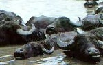Wiesen
und Weiden
Von
besonderem
ökologischen Wert sind die Sumpfwiesen, die austrocknenden
Moorwiesen und
Trockenrasen-Inseln, aber auch die Mähwiesen und Randbiotope.
Eine sinnvolle
Möglichkeit, diese Offendlandflächen vor Verbuschung
zu erhalten, ist die
extensive Beweidung. Der Naturschutz besinnt sich dabei auf alte
Haustierrassen
wie das Ungarische Graurind (Bos taurus primigenies podolicus) und den
auspruchslosen Wasserbüffel ( Bos bubalus domesticus), die
diesen
unterschiedlichen Lebensräumen optimal angepasst sind.
Eine der
seltenen Wiesenpflanzen ist die Spinnen-Ragwurz (Ophrys sphegodes).
Zahlreiche geschützte Knabenkrautgewächse kommen hier
vor: das Kleine
Knabenkraut (Orchis morio), das Fleischrote Knabenkraut (Dactylorhiza
incarnata), das Sumpf Knabenkraut
(Orchis laxiflora susp. palustris), das Wanzen Knabenkraut (Orchis
coriophora) und das
Helm Knabenkraut (Orchis
militaris) sind nur einige Beispiele. Daneben findet man auf Wiesen und
an
Waldrändern die Hundswurz (Anacamptis pyramidalis), dem
Herbst-Schraubenständer (Spiranthes spiralis) und den Echten
Sumpfwurz (Epipactis
palustris).
Auf den
Trockenrasen blüht die Kleine Traubenhyazinthe (Muscari
botryoides) und an
einigen Stellen die Bunte Schwertlilie (Iris variegata). Im Winter
suchen die
sonst feuchtigkeitsliebenden Kammolche (Triturus cristatus) und
Teichmolche (Triturus
vulgaris) die Rasenflächen auf. Von den Amphibien kommen die
Knoblauchkröte (Pelobates
fuscus), die Erdkröte (Bufo bufo) und die
Wechselkröte (Bufo viridis) vor.
Seltene Brutvögel dieses Gebietes sind die Wiesenweihe (Circus
pygargus) und
die Wiesenralle (Crex crex). In den Feuchtwiesen nistet der Rotschenkel
(Tringa totanus) und auf den trockeneren freien Flächen
hört man regelmäßig den
Wachtelruf (Coturnix coturnix). Der Wiedehopf (Upupa epops) ist hier
auch
anzutreffen. Er bewohnt die hohlen Weiden am Rande der Wiesen. Unter
der
Nagetieren sind zwei Arten erwähnenswert: die Nordische
Wühlmaus (Microtus oeconomus) und die Erdmaus (Microtus
agrestis). Beide sind Relikte aus der
letzten Eiszeit.
|
|
WASSERLEBENSRÄUME
In der
Abwechslung liegt der besondere Wert des Gebietes. Am- und im Wasser
haben sich
Lebensgemeinschaften gebildet, die in Ungarn nur sehr selten zu finden
sind. So
lassen sich auf der 5.400 ha großen Fläche des
Feneker Sees allein 150 cönotaxonisch
beschreibbare Pflanzenarten nachweisen. Besondere Bedeutung kommt der
in
Mitteleuropa einzigartigen Sumpfvegetation (Phragmitetea) zu. Mit etwa
2.200 ha
nehmen dabei die Röhrichte (Scripo-Phragmitetum) ein. Es
folgen die Großseggen
(Magnocarition) mit 1.500 ha und die Laichkrautvegetation der
zahlreichen
Kanäle. Auch der Hidveger See weist mit ca. 50 Arten eine noch
beachtenswerte
Vielfalt auf. Zum Großteil ist hier die
Wasser-Sumpf-Vegetation infolge der
Überflutung zum Stillstand gekommen. In diesem Bereich des
Kleinbalatons
dominieren die offenen Wasserflächen.
|
|
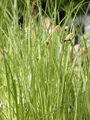Großseggen
Vegetation
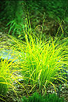
Die
Großsegge
ist die augenfälligste Pflanze der wassergebundenen
Pflanzengesellschaften. Fast
alle Übergänge zwischen den Bultenseggen und den
Grossegen sind nachweisbar.
Die Hauptpflanzen sind die Bultensegge (Carex elata / Bild links) und
Ufersegge
(Carex
riparia / Bild rechts). Beide Arten bilden ausgedehnte Vorkommen.
|
|
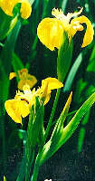Die
tieferen Teile zwischen
den Bulten ist besonders erwähnenswert, weil sich hier
Großseggen- und
Laickkrautvegetation miteinander vermischen. Das
Großseggen-Gebiet ist der
bevorzugte Lebensraum von Moorfrosch (Rana arvalis) und Rotbauchunke
(Bombina bombina). Von den Singvogelarten trifft man häufig
auf den Schilfrohrsänger (Acrocephalus schoenobaenus), den
Rohrschwirl (Locustella luscinioides) und die
Rohrammer (Emberiza schoeniclus). Hier befinden sich auch die
Brutplätze der
besonders geschützten Moorente (Aythya niroca).
Häufig leuchten die gelben
Blüten der Wasserschwertlilie (Iris pseudacorus / Bild links)
aus dem Blättermeer.
Farbtupfer setzen auch die blau aufbrechenden Wiesen-Platterbsen
(Lathyrus palustris) und der Große Hahnenfuss (Ranunculus
lingua). Daneben findet man
den Kalmus (Acorus calamus) und den in Schwimm-Mooren beheimateten
Sumpffarn (Thelypteris palustris) in den Flachwasserzonen.
|
|
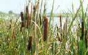
Röhrichte
Der
Kleinbalaton ist eines der größten
Röhrichtgebiete Mitteleuropas. Sein
besonderer ökologischer Wert liegt in der mosaikartigen
Struktur begründet.
Langezeit ungestört geriet das unzugängliche
Schilfmeer erst im 19.
Jahrhundert durch seine "Reiherdörfer" in den Blickpunkt der
interessierten Fachwelt.
|
|
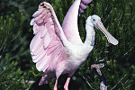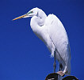Der
Silberreiher (Casmerodius albus / Bild rechts) ist hier ein
häufiger Zugvogel aus Südost-Europa, der in
Deutschland nicht vorkommt.
Auch heute noch brüten hier der verstärkt
geschützte
Seidenreiher (Egretta garzetta), der Löffler (Platalea
leucorodia / Bild links), der
Rallenreiher (Ardeola ralloides), der Fischreiher (Ardea cinerea), der
Purpurreiher (Ardea purpurea), der Nachtreiher (Nycticorax nycticorax),
die Zwergrohrdommel (Ixobrynchus minutus / Bild rechts unten) und die
Rohrdommel (Botaurus stellaris / Bild links unten).
|
|
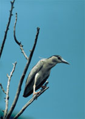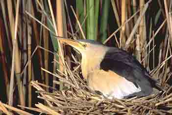Aus
dem Konzert der
Singvögel lassen sich die Stimmen von
Drosselrohrsänger (Acrocephalus arundinaceus), Rohrschwirl
(Locustella luscinioides), Teichrohrsänger (Acrocephalus
scirpaceus), Tamariskensänger (Lusciniole melanopogon), und
Bartmeise (Panurus biarmicus) heraushören.
In den kleinen
Offenwasserbereichen sind massenweise Entenvögel zu
beobachten, alle Entenarten
Ungars finden hier geeignete Brutplätze. Bedeutende
Nistbestände bilden die
Moorente (Aythya nyroca) und die Graugans (Anser anser).
|
|
KANÄLE
UND UFER
Das
langsam
fließende, an einigen Stellen verschlammte Wasser der
Kanäle und Gräben schafft
ideale Voraussetzungen für die Ausbreitung einer
Laichkrautvegetation. Dem
Betrachter werden wohl zuerst die weißen Sterne der Seerose
(Nymphaea alba)
auffallen. Die Gräben entlang kommt der giftige Wasserschilf
Sumpf-Brennessel
(Urtica kioviensis), und Kalmus (Aco rus ling (Cicuta virosa). calamus)
sind
ebenfalls auffällige Bewohner der Uferbereiche. Die
kleinstblütigste Pflanze
der Welt, die Zwergwasserlinse (Wolffia arrhiza) lebt hier zwischen den
Wasserlinsendecken (Lemnaceae). In den schmalen Sumpfkanälen
ist der Hun (Umbra krameri) zu
Hause, der früher zur Fütterung von Hausschwein und
Ente frisch
gefangen wurde.
Den
wechselnden Lebensbedingungen dieses Lebensraumes hat sich der
Schlammpeizger
(Misgurnus fossilis) auf einzigartige Weise angepasst: Sein von vielen
Adern
durchwobener Nachdarm macht die Aufnahme atmosphärischen
Sauerstoffs möglich.
Früher zählte diese Fischart zu den wichtigsten
Fastengerichten und die
Schlammpeizger-Fischerei war ein blühendes Geschäft.
Unter den Reptilien kommen
regelmässig die Europäische Sumpfschildkröte
(Emys orbicuor. ris), die
Ringelnatter (Natrix natrix), und die Würfelnatter (Natrix
tesselata) vor.
In den Uferweiden baut die Beutelmeise (Remiz pendulinus) ihre
freihängend
Nester.
|
|
OFFENE
GEWÄSSER
Während
der
Feneker See überwiegend von Vegetation bedeckt ist,
dominieren am Hidveger
See die offenen Wasserflächen und die
Laichkraut-Pflanzengesellschaften. Den
Überflutungen folgend, eroberte der Wasserknöterich
(Polygon amphibium) große
Gebiete. Dieser Bestand hat sich aber jetzt zurückgebildet.
Bemerkenswert sind zwei Laichkrautarten, die Wassernuss (Trapa natans)
deren
Frucht nach Kastanien schmeckt, und deshalb gesammelt wird und der
Gemeine
Wasserschlauch (Utricularia vulgaris), der zu den
Insektenfängern
gehört. Im nährstoffreichen Wasser gedeiht die
Krebsschere
(Stratoides alloides). Sie bedeckt
stellenweise große Wasserflächen und sichert die
Lebensbedingungen einer
Libellenart, den Grünen
Mosaikjungfer (Aeschna viridis), deren Vermehrung von der Existenz
dieser Pflanze
abhängt. Die Larven von mehr als 30 Mücken entwickeln
sich in den Wässern und bieten eine sichere Nahrungsgrundlage
für viele Arten, darunter auch den Wasserfrosch (Rana
esculenta).
Von den etwa 30
nachgewiesenen Fischarten stellt der bedeutende Bestand der Karpfen
(Gyrunus carpio
morpha hungaricus), eine echte Besonderheit dar. Fische bilden die
Hauptnahrung
der sehr seltenen Otters (Lutra lutra), der sich diesem Lebensraum
optimal
angepasst hat.
|
|
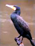Vogelwelt
und Vogelschutz
Grosse Fischfresser sind auch
die Kormorane (Phalacrocorax carbo / Bild rechts). Ihre Nistkolonien
mit insgesamt mehr als 900 Brutpaaren sind schon von fern an den im
Wasser
stehenden, abgestorbenen Weiden erkennbar. Man schätzt den
täglichen
Fischkonsum dieser geschickten Jäger auf 1,5 Tonnen. Auch die
Weißbartseeschwalben (Chlidonias hybrida) bilden Siedlungen.
Sie bestehen aus
vielen, auf dem Wasser schwimmenden Nesten. Die Fluss-Seeschwalben
(Sterna hirundo) benötigen flache, vegetationsfreie Inseln zum
Brüten. Oft siedeln sie
zusammen mit Lachmöwen (Larus ridibundus), seltener mit ihren
Verwandten, den
Schwarzkopfmöwen (Larus melanocephalus).
Der
Nationalpark und die Stiftung
"Értékeinkért" organisieren
regelmässige
Aktionen für die Erhaltung der Nistplätze. Sie sind
die drittgrößten
ihrer Art in ganz Ungarn. Das Ziel der Arbeiten ist die langfristige
Sicherung der Inseln als Brutplätze. Aufwachsende Kraut- und
Strauchvegetation wurden
entfernt und die Uferböschungen mit Weidengeflecht und
Basaltsteinen vor
Wellenschlag geschützt. Während des Herbstzuges auf
dem offenen Wasser und im
Winter auf dem zugefrorenen See lassen sich bis zu 50.000
Wildgänse beobachten.
Tagsüber lassen sich zu allen Jahreszeiten viele
futtersuchenden Enten, darunter einige seltene Gäste
beobachten.
|
| |
| |
Ungarn-Tourist Team

|
| |
| |
|